This is a website I developed with a teammate for our senior capstone project. We were tasked with finding a client to do a volunteer project for. Our client, Nhieu Bo, was a local real estate agent in need of a website for his company. Below are the results of our semester-long project.
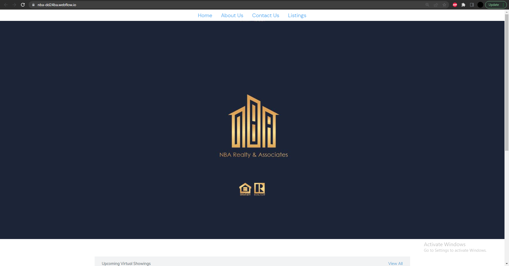The main features as required by our client include: landing page with some featured properties, about page with information about Bo (the owner) and the company, a form for contacting the company, a page for all of the company's active listings, and a property search system.
The structure of the site was created using a template on Webflow (web-dev program). Widgets for the website were implemented through the use of IDX. Data for properties required the use of the MLS.com database. Below you will see our implementation of the 'up-coming showings' widget. It displays the property links for listings that will be featured in up-coming showings.
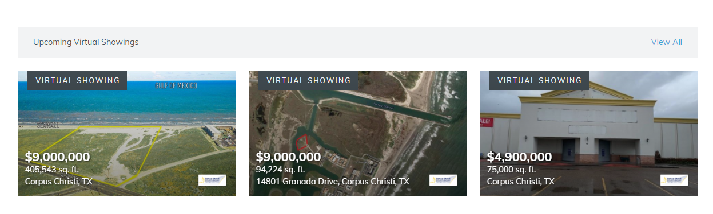The about page includes general information about Bo (the owner) and the company, as well as an image of Bo.
On the "Contact Us" page, the user is able to fill a form with contact information and send a message directly to Bo's email address. This form uses another IDX widget for connecting an email address to the receiving end of the form.
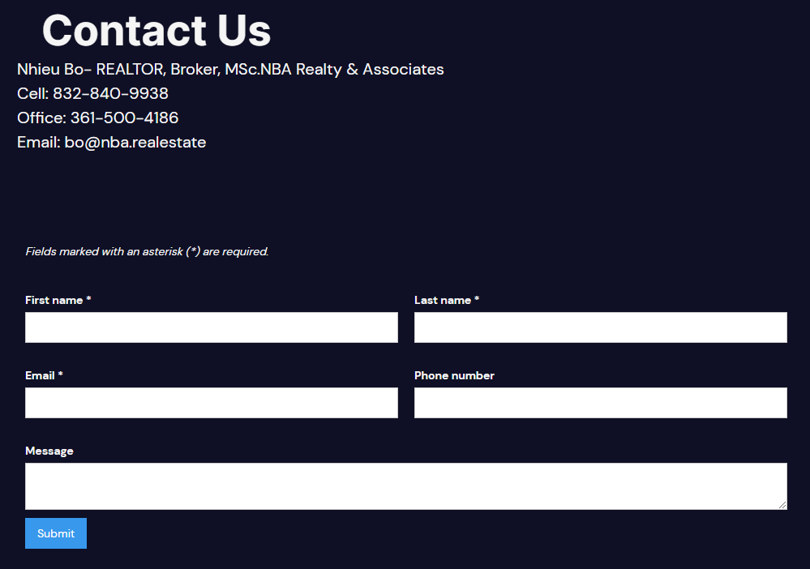The listings page contains all of the company's current listings. We were able to pull all of the data for the properties from the MLS.com database. The page dynamically fills cells with the most recently added adresses, and each cell can be clicked on to direct the user to a page with a plethora of information about said property.
Below you'll see an example of the listings page and a property's page. I'll select the first cell in the table:
 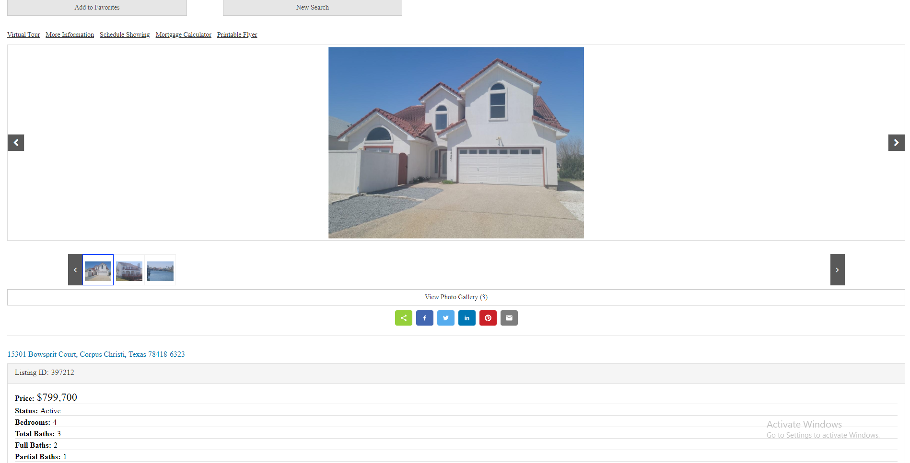
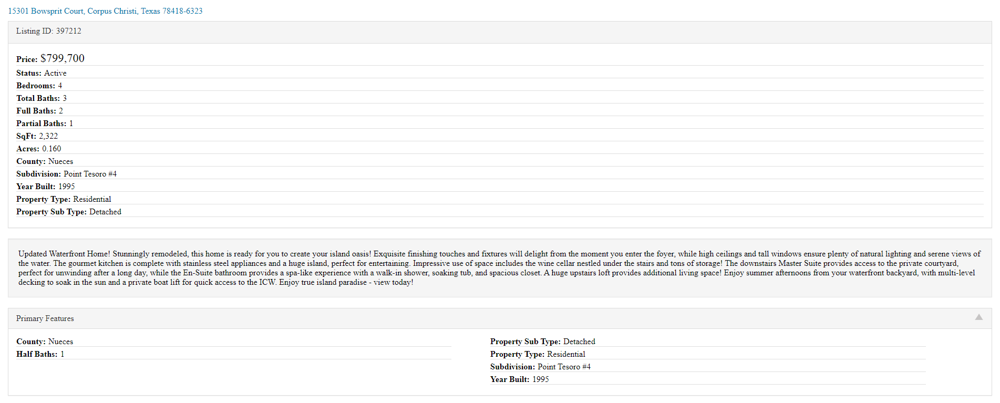
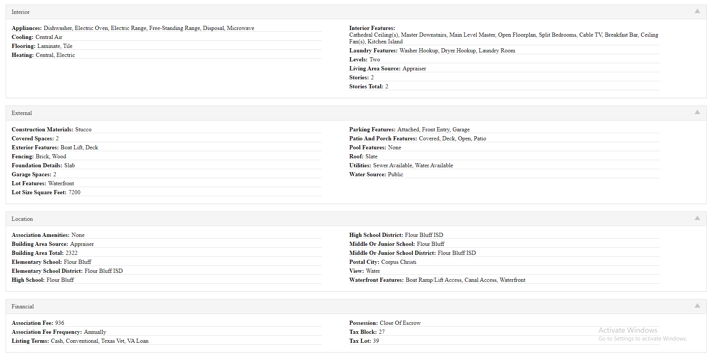
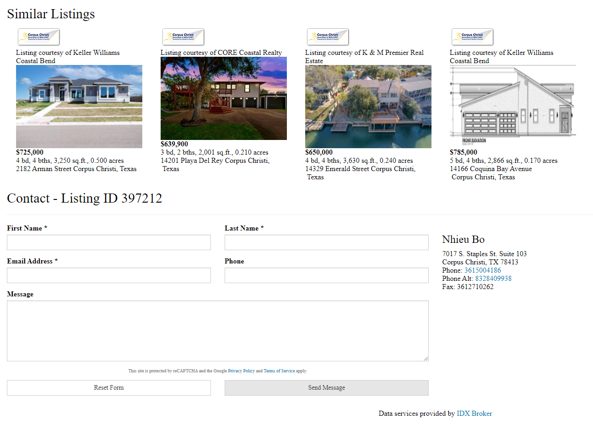
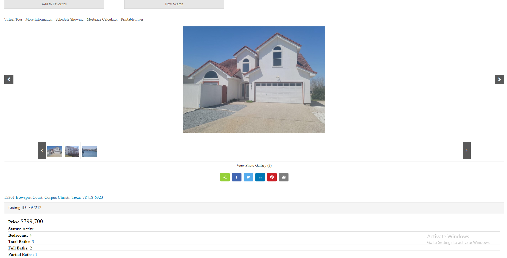
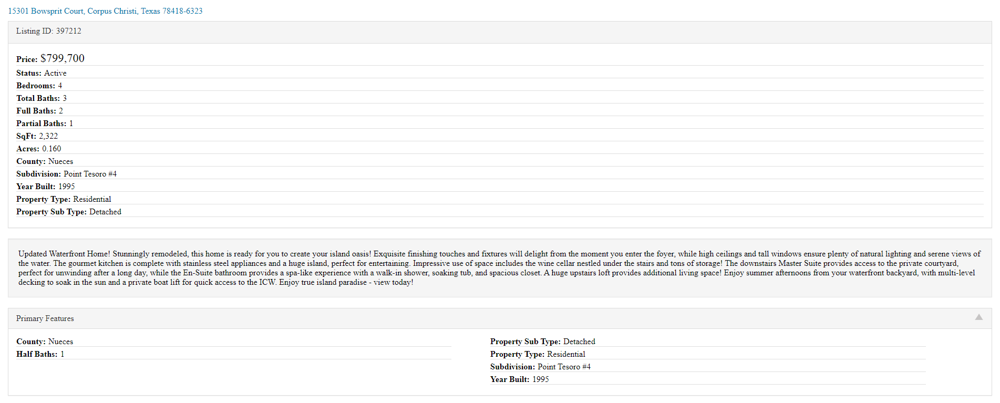
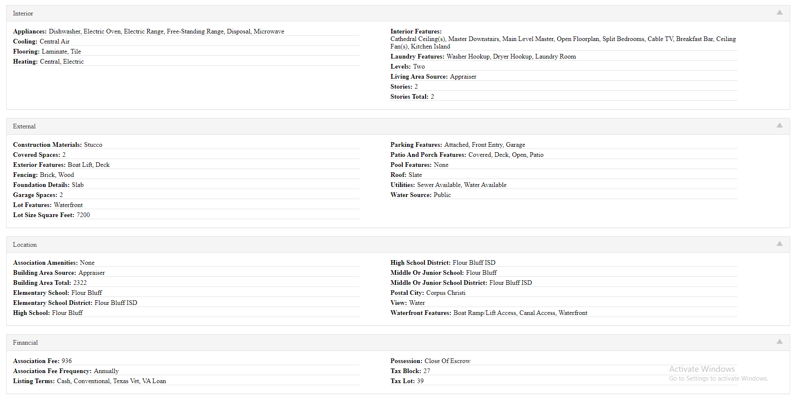
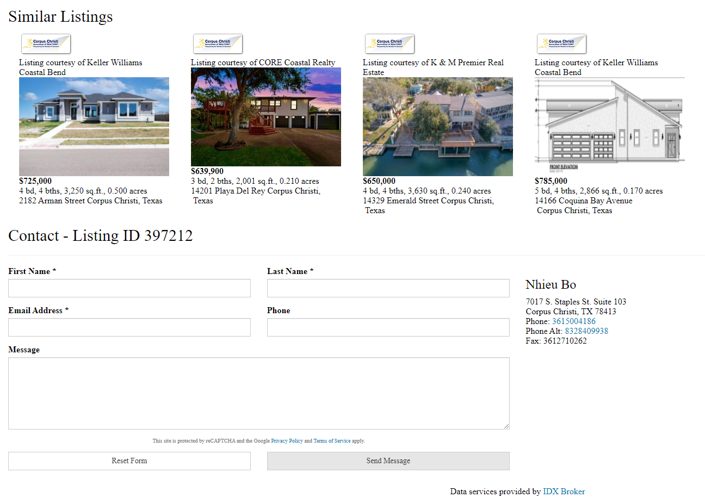
The widget we used for making the property pages was especially handy, as it offered a bunch of features aside from just displaying information about the property. Property pages include virtual tours, showing scheduling, mortgage calculator, printable flyers, a photo gallery, icons for sharing the property via different platforms, similar listings, bookmarking, and another form for contacting Bo.
On top of all that, the widget includes forms for searching for other properties via advanced search (filtered information), listing ID, address, or map search.
Hello